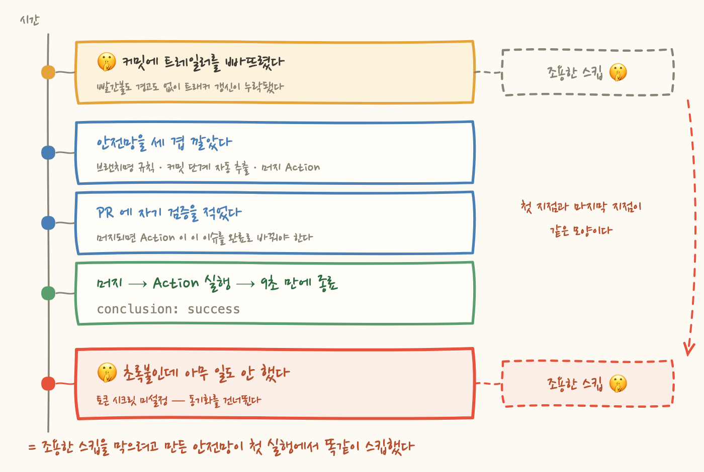
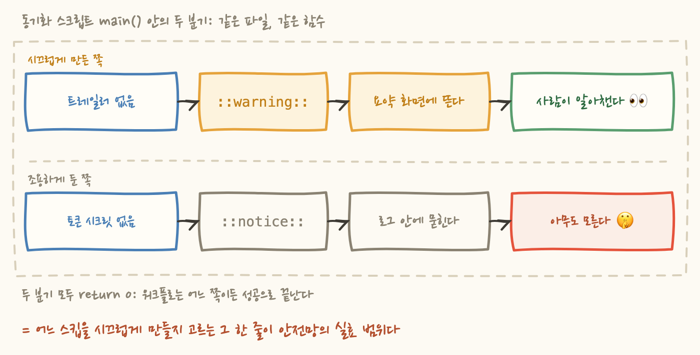

커밋 메시지 끝에 Task: <이슈 URL> 이라는 한 줄을 빠뜨렸어요. 이 트레일러가 붙어 있으면 외부 이슈 트래커의 해당 항목이 자동으로 갱신되는 구조였는데, 그날 커밋에는 그냥 없었습니다.
그래서 무슨 일이 일어났느냐면, 아무 일도 일어나지 않았어요. 빌드는 초록불이었고, PR 은 머지됐고, 리뷰도 통과였습니다. 다만 트래커에서만 그 작업이 여전히 진행 중이었어요. 경고 하나 없었습니다. 트레일러가 없으면 조용히 넘어가도록 설계돼 있었거든요.
그 뒤로 안전망을 세 겹 깔았고, PR 본문에 검증 방법까지 미리 적어뒀고, 머지했고, Action 이 돌았고, 초록불이 떴어요. 그리고 또 아무 일도 일어나지 않았습니다.
오늘 글의 질문은 이겁니다. 조용히 넘어가는 설계는 어디까지가 안전장치이고 어디부터가 사각지대인가.
먼저 구조부터요. 작업 하나가 끝났다는 판정 시점은 머지입니다. 코드가 main 에 들어간 순간이 완료지, 사람이 트래커 화면을 열어 드롭다운을 바꾼 시점이 아니에요. 그래서 커밋 메시지에 트래커 항목을 가리키는 트레일러를 붙이는 관례를 두고, 그 트레일러를 읽어 상태를 옮기기로 했습니다.
문제는 그 관례가 사람의 기억에 걸려 있었다는 거예요. 커밋할 때 트레일러를 붙이는 걸 기억해야 하고, 기억하려면 그 작업이 트래커에 있다는 것부터 기억해야 합니다. 그날은 기억하지 못했어요. 사실 항목은 트래커에 이미 있었고 검색 한 번이면 나왔는데, 검색할 생각을 안 한 겁니다.
그리고 여기가 핵심인데, 누락이 아무 신호도 만들지 않았어요. 빨간불이 뜨지도 않았고, 경고가 남지도 않았고, 어디에도 "이 커밋에는 트레일러가 없다"는 흔적이 남지 않았습니다. 며칠 뒤에 트래커를 열어보고서야 알았어요. 누락은 실패로 나타나지 않고 침묵으로 나타납니다. 그래서 발견이 늦어요.
대응의 방향은 하나였어요. 사람이 기억해야 하는 단계를 걷어내는 것입니다. 한 겹뿐이라서 뚫린 거니까 층을 나눴습니다.
첫째, 브랜치명 관례. {유형}/{이슈키} 형태로 브랜치를 만듭니다. 작업 시작할 때 딱 한 번만 정확하면 되고, 그 뒤로는 브랜치명이 키를 들고 다녀요. 지라를 쓰는 팀이면 익숙한 형태고, 기존 관례와 모양이 같아서 새로 배울 게 없다는 점도 컸습니다.
둘째, 커밋 단계에서의 자동 추출. 커밋을 만드는 작업 스킬에 단계를 하나 신설해서, 브랜치명에서 키를 뽑아 트레일러를 자동으로 넣게 했어요. 키를 못 찾으면 조용히 넘어가지 않고 묻고 진행합니다.
셋째, 머지 시점의 GitHub Action. 앞의 두 겹을 다 건너뛰어도, 즉 브랜치명을 다르게 짓고 커밋 스킬도 안 썼어도, PR 이 머지되면 Action 이 커밋 범위를 훑어 트레일러를 찾고 항목을 완료로 옮깁니다.
세 겹으로 나눈 이유가 있어요. 앞의 두 겹은 사람이 관례를 지킬 때만 동작합니다. 브랜치를 다르게 짓거나 스킬을 안 쓰면 그냥 없는 겹이에요. 사람 손을 안 타는 건 마지막 겹 하나뿐입니다. 그러니까 진짜 안전망은 세 겹이 아니라 한 겹이었어요.
이 작업 자체도 PR 로 올렸습니다. 트래커 계층 재설계, 스킬 두 개 수정, Action 신설, 문서 정정이 한 PR 에 들어 있었어요. 그리고 PR 본문 끝에 자기 검증이라는 절을 하나 뒀어요.
이건 좋은 습관이라고 생각해요. 검증 기준을 결과가 나오기 전에 적어두면 나중에 결과에 맞춰 기준을 조정할 수가 없거든요. 게다가 이번 건 특히 깔끔했습니다. 방금 만든 도구가 자기 자신에게 처음 적용되는 케이스라, 통과하면 도구가 동작한다는 뜻이고 실패하면 그 자리에서 드러날 테니까요.
같은 PR 본문에 머지 후 필요한 설정이라는 절도 있었어요. 체크박스 두 개였습니다. 통합 토큰을 만들어 레포 시크릿에 등록할 것, 그 통합을 대상 데이터베이스에 연결할 것이었어요. 그리고 그 아래 한 줄이 더 있었죠.
두 절이 같은 PR 본문 안에서 서로를 무효화하고 있었는데, 그때는 안 보였어요.
머지했습니다. Action 이 트리거됐고, 9초 만에 끝났고, 초록불이었어요. 여기까지만 보면 선언한 자기 검증이 통과한 것처럼 보입니다.
실행 로그를 열어봤어요.
시크릿을 아직 등록하지 않았던 겁니다. 그래서 스크립트는 첫 줄에서 토큰이 비어 있는 걸 보고 즉시 종료했어요. 커밋 메시지를 읽지도, 트레일러를 찾지도, 트래커를 건드리지도 않았습니다. 그리고 종료 코드는 0 이었고요.
선언한 자기 검증이 성립하지 않았는데, 결과는 성공으로 보고됐습니다. 조용한 스킵을 막으려고 만든 안전망이 첫 실행에서 똑같이 조용히 스킵한 거예요.
여기서 분명히 해둘 게 있어요. 이건 버그가 아니라 의도한 설계였습니다. 스크립트 상단 주석에 그렇게 적혀 있고, 워크플로 파일 주석에도, PR 본문에도 적혀 있어요. 왜 그렇게 만들었냐면, 시크릿을 등록하기 전에 이 PR 을 머지하면 Action 이 무조건 실패하거든요. 그런데 그 빨간불은 아무 정보도 없는 빨간불입니다. "시크릿이 없다"는 이미 아는 사실이니까요. 그리고 그 상태로 두면 이후 모든 PR 이 의미 없는 빨간불을 달고 다니게 되고, 사람은 곧 빨간불을 무시하는 법을 배웁니다. 그게 훨씬 위험해요.
그러니까 이건 무능이 아니라 합리적인 선택이 낳은 결과입니다. 그게 이 이야기의 무게예요. 잘못 고른 게 아니라, 잘 고르고도 같은 구멍이 남았다는 것이죠.

동기화 스크립트 맨 위 주석을 다시 읽어봤어요. 설계 판단 네 줄이 적혀 있는데, 그중 인접한 두 줄이 이겁니다.
아래 줄은 정확합니다. "조용히 넘어가면 사고가 재발한다"는 말이 맞고, 그래서 그 분기는 경고를 남기게 했어요. 그런데 그 문장을 쓴 바로 위 줄에서 조용히 넘어가고 있습니다. 두 판단이 세 줄 안에 나란히 있는데도 서로를 못 본 거예요.
코드로 보면 더 선명해요. 같은 함수 안에서 몇 줄 떨어져 있을 뿐입니다.
두 분기의 차이는 한 단어예요. notice 로 남기느냐 warning 으로 남기느냐입니다. 그런데 이 한 단어가 결과를 완전히 갈라놓습니다. ::warning:: 은 GitHub 이 실행 요약 화면 상단에 노란 박스로 띄워줘요. 로그를 열지 않아도 보입니다. ::notice:: 는 로그 본문 안에만 남고요. 그리고 초록불인 실행의 로그를 굳이 열어보는 사람은 없습니다.

여기서 알아챈 게 있어요. 안전망이 동작하느냐는 코드가 스킵을 감지하느냐로 결정되지 않습니다. 두 분기 다 감지는 완벽하게 하고 있었어요. 갈리는 지점은 그다음, 감지한 걸 어느 레벨로 올리느냐입니다. 어떤 스킵을 시끄럽게 만들지 고르는 그 선택이 안전망의 실효 범위 그 자체예요.
고치는 방향은 그래서 간단합니다. 토큰 미설정도 ::warning:: 으로 올리는 것. 그러면 시크릿을 등록하기 전까지 머지되는 모든 PR 의 요약 화면에 노란 박스가 계속 뜹니다. 시끄럽죠. 그런데 그게 정확히 원하는 상태예요. 미완성인 설정이 화면에 계속 남아 있는 것이죠. 빨간불로 파이프라인을 막지도 않고, 침묵하지도 않는 중간 지점이 바로 여기입니다.
같은 PR 에 있던 다른 이야기인데, 결이 같아서 붙여 적을게요.
기존 트래커 계층은 프로젝트 > 릴리즈 > 태스크 였어요. 문제는 가운데 릴리즈 층이었습니다. 거기에 성격이 다른 두 종류가 섞여 있었거든요. 하나는 기능 영역이에요. {도메인 A}, {도메인 B} 처럼 수명이 길고 닫히지 않는 묶음이죠. 다른 하나는 시점 묶음입니다. POC 검증, 하드닝-YYYYMMDD 처럼 언젠가 닫히는 묶음이고요.
이 둘을 같은 층에 두면 왜 깨지느냐면, 태스크는 부모를 하나만 가질 수 있기 때문이에요. 예를 들어 로그인 방어 관련 태스크가 하나 있는데, 기능상으로는 명백히 {도메인 A} 소속입니다. 그런데 "당장 안 하는 일"이라 백로그 묶음 아래 들어가 있었어요. 그 순간 {도메인 A} 진척률에서 그 태스크가 사라집니다. 화면에 뜨는 진척률이 실제와 달라져요.
반대 방향도 똑같이 깨집니다. 하드닝 묶음 아래 모인 태스크들은 실제로는 세 개 도메인에 흩어진 일이에요. 한 바구니에 묶여 있으니 도메인별로 무엇이 남았는지를 볼 수가 없습니다.
직교하는 두 축을 같은 트리에 넣으면 반드시 하나가 손상돼요. 트리는 부모가 하나니까, 기능으로 묶으면 시점 진척이 안 보이고 시점으로 묶으면 기능 진척이 안 보입니다. 계층 구조를 유지하는 한, 둘 다 보이게 하는 방법은 없어요.
그래서 계층은 기능(에픽) 으로만 두고, 시점은 속성으로 뺐습니다. 그러면 태스크 하나가 "{도메인 A} 에픽" 과 "하드닝-YYYYMMDD 마일스톤" 을 동시에 가질 수 있어요. 축이 둘이면 좌표도 둘이어야 합니다.
같이 손본 게 하나 더 있어요. 상태 값이 시작 전 / 진행 중 / 완료 세 개뿐이었는데, 여기에 검증 대기 를 신설했습니다. 최종 워크플로는 이렇게 됐어요.
검증 대기 를 둔 근거가 이 시리즈 안에 있어요. 1~3편의 메일 작업이 정확히 그 상태였거든요. 코드는 끝났는데 발신 도메인 승인과 프론트 페이지 연동을 기다리고 있었어요. 이걸 진행 중 으로 두면 화면에는 "누군가 이 일을 하고 있다"로 보입니다. 실제로는 아무도 아무것도 안 하고 있고, 밖에서 뭔가 오기를 기다리고 있는데도요.
진척이 멈춘 것과 진척이 느린 것은 다른 상태인데, 상태 값이 없으면 화면에서 구별되지 않아요. 그리고 구별되지 않으면 아무도 그 멈춤을 풀러 가지 않습니다.
여기까지 쓰고 나니 5장과 6장이 같은 이야기라는 게 보였어요. 하나는 로그 레벨이고 하나는 상태 값인데, 둘 다 "실제로 벌어지는 일이 화면에서 안 보인다" 입니다. 표현할 어휘가 없으면 그 상태는 존재하지 않는 것처럼 다뤄져요.
배경을 하나 밝히면 논지가 더 선명해지는데요. 이 저장소의 .github/workflows/ 에는 이 동기화 워크플로 하나뿐입니다. 테스트를 돌리는 CI 가 아직 없어요. 빌드와 모듈 경계 검사는 로컬 커밋 훅으로 돌리고 있고요.
그러니까 이 PR 화면의 초록불이 보장하던 건 처음부터 딱 하나였습니다. "이 워크플로가 예외 없이 종료했다." 그런데 우리는 거기에 "동기화가 됐다"를 얹어 읽었어요. 얇은 초록불에 두꺼운 의미를 붙인 겁니다.
fail-soft 라는 선택 자체가 나쁜 건 아니에요. 준비가 덜 된 상태에서 파이프라인을 멈춰 세우지 않는 건 실무에서 자주 옳습니다. 다만 그 편의의 대가가 뭔지는 정확히 알아야 해요. fail-soft 는 "돌았지만 아무것도 안 했다"를 초록불로 위장합니다. 그게 정확히 이 기법이 파는 물건이에요.
그래서 fail-soft 를 고를 때 물어야 할 질문이 바뀌어야 합니다.
답이 "아무도"라면, 그건 안전망이 아니라 안전망 모양의 장식이에요. 코드는 거기 있고, 워크플로도 돌고, 로그도 남습니다. 다만 그 전체가 아무 상태 변화도 만들지 않을 뿐이죠.
정리하면 세 줄입니다. 하나, fail-soft 는 기본값이 아니라 결정이에요. 결정이 끝나려면 로그 레벨과 관측 지점까지 같이 정해야 합니다. 둘, 자기 검증을 선언했으면 그 선언이 실제로 실행됐는지까지 봐야 검증이에요. 초록불은 실행 결과가 아니라 종료 코드입니다. 셋, 스킵도 결과입니다. 아무것도 안 한 실행과 다 한 실행이 화면에서 같아 보이면, 그 화면은 정보를 주는 게 아니라 안심을 주는 거예요.
이번 건 다행히 첫 실행에서 드러났어요. 검증 방법을 미리 적어둔 덕분입니다. 만약 그 문장을 안 적었다면 초록불을 보고 "됐네" 하고 넘어갔을 거고, 몇 주 뒤에 트래커가 다시 실제와 어긋나 있는 걸 발견했겠죠. 같은 사고를 두 번째로 만나면서요.